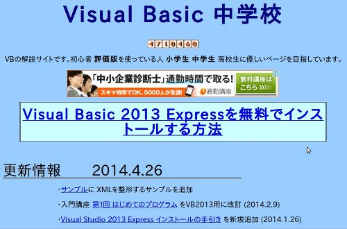

かならずお読みください →

しゃべる文字盤のつくりかた
4 エクセルVBA 初学者のための手引き

エクセルVBAに取り組むにあたり、何を勉強すればいいか、どこから手をつけたらいいかお困りになっている人もおられると思います。そんな人のために学習の初期の取り組みと、疑問の解決の手がかりとなる（かもしれない）話をします。 私は工学部の学生時代にPC-98でN88BASICを使った経験がありますが、Windowsが出てから全くプログラミングはご無沙汰で、しゃべる文字盤を作るためにVBAを始めるまで25年以上のブランクがありました。プログラムに関して、ほとんど曖昧な記憶があるだけでまるで浦島太郎に近い状態でした。 このページでは、おもに私のこの時期の経験をベースにこれに他人から聞いた話を加味してお話ししていきます。また学生ではありませんので、学習には可能な限りお金と時間はかけないように心がけました。そのためインターネット上に公開されているサイトのいくつかを利用させて頂きました。
ここでは、ExcelVBA（Visual Basic for Applications）について話を進めますが、類似の言葉がいくつか出てきます。例えばVB（Visual Basic）、VB.NET（Visual Basic.NET）、N88BASIC などです。これらは親戚のような関係のプログラム言語で、類似点も相違点もあります。ですからより一層しっかり区別する必要があります。またそれぞれバージョンごとに違いもあるので、この点にも気をつける必要があります。言語やバージョンは異なっても非常に参考になりことが多いですが、まるで違うこともあります。また古いバージョンではつかえない機能、また反対に新しいバージョンではつかえない機能もあります。やり方が悪いのかと思ったら、そもそもつかえない機能だったなどということもあります。インターネットは学習に有用ですが、情報が雑多で未整理ですので読み手の方で気をつけて読む必要があります。 また、実際にパソコンを動かして学習、確認、復習をすると効果が上がります。最新のExcelが理想的ですが、古いバージョンでもないより役にたちます。
以下に私が学習に利用したwebサイトを紹介します。
当時私は、MS-DOS時代からタイムスリップ？しましたので、まずWindowsでのプログラミングの概要と基本を勉強する必要があると考えました。○ Visual Basic 中学校
初学者向けに、機材やソフトの準備から基本を丁寧に手ほどきしてくれます。入門講座は、VB系とVB.NET系にわかれています。適宜更新されていることと、VisualBasic ver6 など古いバージョンの教材が残してありましたので、この分野の老舗なのかもしれません。 私は、VBの概要を把握して自分の知識とレベルの確認のためにこのサイトを利用しました。すっかり忘れていた昔のことをいくつか思い出し、最近の様子も大まかに知ることが出来ました。 このサイトでは、VBAに関する記述がほとんどありませんが、N88BASICとVBAの間の部分をダイジェストで学ぶことができました。○ ＶＢＡによるマクロプログラミング 初めてのマクロ
ExcelVBAのマクロについて説明してあります。上で勉強したVBとExcelとの関係が学べます。またここでVBとVBAの違いについても学べます。初心者にもやさしい書き方がしてあります。 経験がある人にはこれらの記事は必要ないかもしれませんが、ブランクが大きい方やマクロについて知りたい方はさらっと読んでおけば、あれこれ手がかりになるかもしれません。 マクロを理解するために、この記事にも解説のある、マクロの自動記録を体験することをお勧めします。概要と基礎の次には、目的の機能を実現するためのプログラミングの勉強です。
○ OfficeTANAKA VBA TIP
Tipとは、ヒントやコツの意味です。具体的な課題への対応事例が紹介されています。このような解説のサイトはいくつかあります。はじめのうちは、『Excel VBA 音を出す』などと目標とする機能で検索すると、上位には標準的な、オーソドックスな方法を説明しているサイトが表示されます。これらをいくつか読んでみると徐々に自分の目的と技量に合ったサイトが見つかってきます。これが『行きつけのサイト』になるでしょう。そこの解説記事が物足りなくなってきたら、あたらしい『師匠』をさがしましょう。 officeTANAKAさんのサイトはこの様な読み比べの結果、私にとって、項目や内容や説明がわかりやすので自然に足を運ぶようになりました。 しかし、このサイトをはじめから読み進んでもあまり学習の効率は高くないように思います。検索でヒットした項目の中から、officeTANAKAサイトをまず読んで、他の記事も補足のために読むのがよかったように思います。行き詰まった時の解決のためには、、
○ Microsoft MSDN 同じ動作に複数のコマンドが見つかった場合には、MicrosoftのMSDNを調べるのがよいでしょう。古くなって徐々に使われなくなったコマンドや、新しく採用されたコマンド、またバージョンによる違いについて説明してあります。細かいところまで説明してありますが非常にくどいです。 解説サイトをいくつか調べると内容が微妙に（時に大胆に）違うことがあります。こうなると本家本元のMicrosoftのサイトで確認するのが一番です。ただ、いまいち癖のある日本語文章（多分機械翻訳？）なので、疑問が溶けるどころかますますわからなくなることも（時々）あります。一番最初にここで調べればいいのにできないのはこれが理由です。情報自体は信頼できます。（多分）
まとめ
ネットを利用した学習は慣れるまで時間がかかりますが、軌道に乗ると紙の本とは違ったメリットもたくさんあります。 私の経験ではこのような勉強情報は系統だった学習よりも、問題の早期解決に効果があります。また目的のコマンドまで辿りつけば、これをキーワードにあちこちでさまざまな解説とサンプルを見つけることで出来ます。 しかしこのような『場当たり的なやり方』は、学生さんにはためにならない悪い勉強法とは思います。 ご注意ください。
2014/05/08 公開研究企画課リハ工学科にもどる